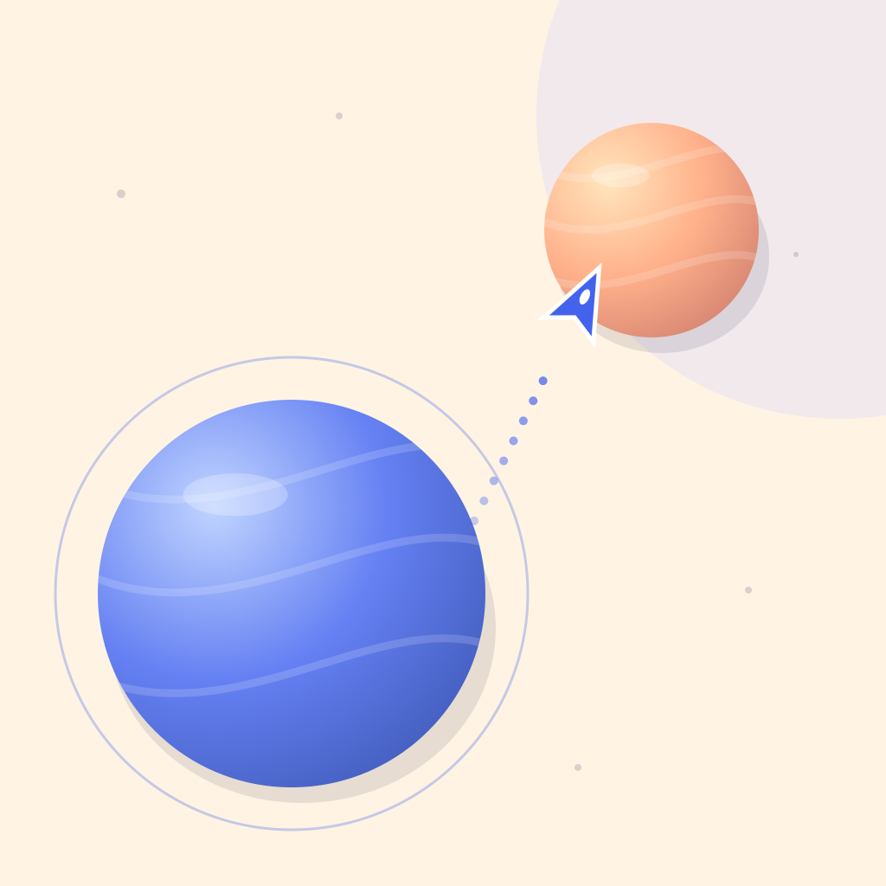

An independent iPhone game
A little leap of wonder.
Hold to aim. Release to fly. Find your way through tiny planets and bring Daylight station back to life.
For iPhone · iOS 17 or later · Portrait play
A bigger sky is coming
The upcoming expansion adds 18 journeys named for real planets and moons across three galaxy-themed regions, plus free Endless flights with increasing speed. Twelve journeys are free; six extra routes are included with Gravity Pro. Easy, Medium, and Hard change your landing challenge. These are imaginary arcade itineraries, not astronomical maps.
Make your station shine
Finish the route, explore both detours, and master Hard to restore Daylight station. Earn stardust for new ships and paints in the workshop. All ships share the same flight physics.
Free to download. Core gameplay works offline. The upcoming release includes optional rewarded continues and Gravity Pro subscriptions. Pro adds themes, extra routes and one ad-free continue per flight while subscribed.